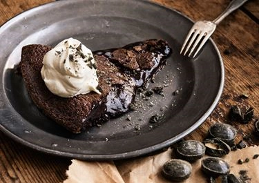

Kladdkaka

35 min

8 ingredienser
Kladdkaka är en populär svensk efterrätt eller fikaklassiker som kännetecknas av sin underbara, kladdiga och chokladiga konsistens.

35 min
8 ingredienser
Kladdkaka är en populär svensk efterrätt eller fikaklassiker som kännetecknas av sin underbara, kladdiga och chokladiga konsistens.